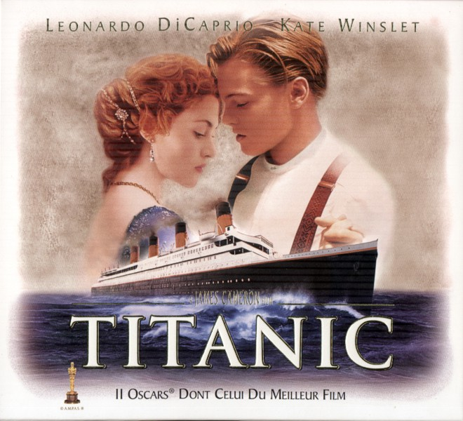
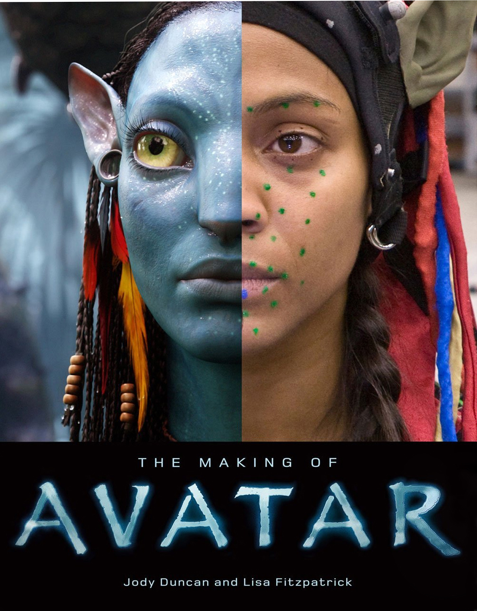
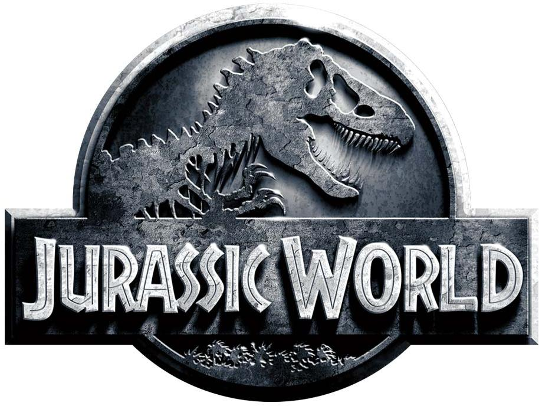
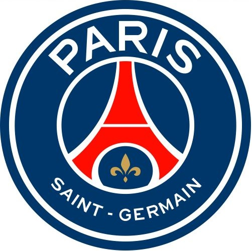
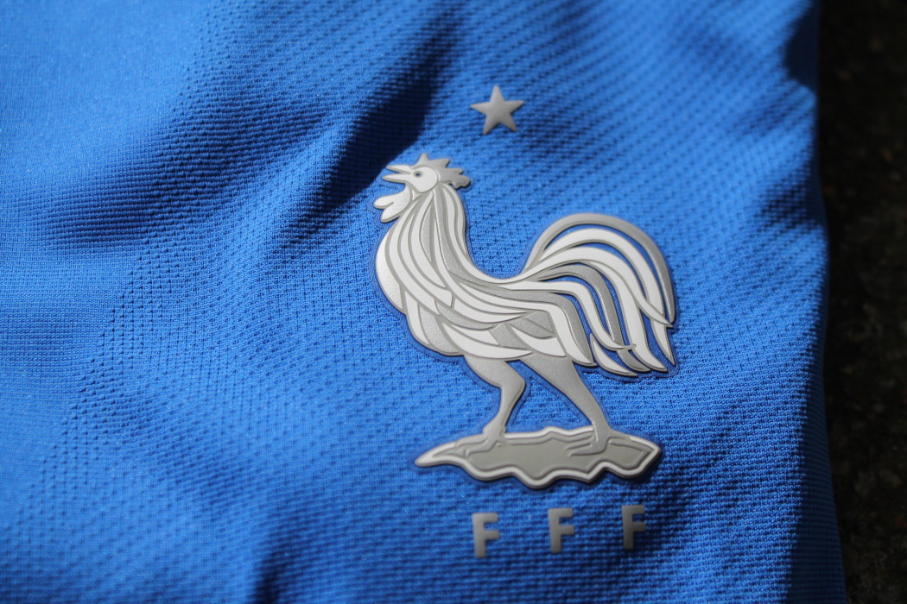
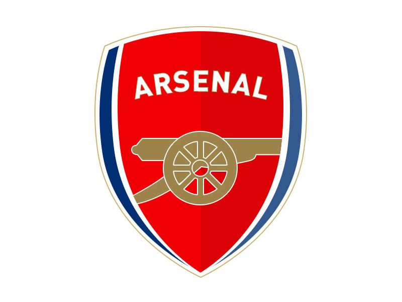

Benoit Gallou
Responsable Audience et contenu vidéo shortform
15 ans d'expérience dans le marketing digital chez Lagardère active, Jet Multimedia et Groupe M6 Saepissime igitur mihi de amicitia cogitanti maxime illud considerandum videri solet, utrum propter imbecillitatem atque inopiam desiderata sit amicitia, ut dandis recipiendisque meritis quod quisque minus per se ipse posset, id acciperet ab alio vicissimque redderet, an esset hoc quidem proprium amicitiae, sed antiquior et pulchrior et magis a natura ipsa profecta alia causa. Amor enim, ex quo amicitia nominata est, princeps est ad benevolentiam coniungendam. Nam utilitates quidem etiam ab iis percipiuntur saepe qui simulatione amicitiae coluntur et observantur temporis causa, in amicitia autem nihil fictum est, nihil simulatum et, quidquid est, id est verum et voluntarium.

My favorites movies
|  |
TitanicTitanic est une romance dramatique américaine écrite, produite et réalisée par James Cameron, sortie en 1997. |
|  |
AvatarAvatar est un film de science-fiction américano-britannique réalisé par James Cameron, sorti en 2009. |
|  |
Jurassic WorldJurassic World ou Monde jurassique au Québec1 est un film américain de science-fiction réalisé par Colin Trevorrow, sorti en 2015. Il s'agit du quatrième volet de la série cinématographique Jurassic Park, librement adaptée des romans Jurassic Park et Le Monde perdu du romancier Michael Crichton. |
My favorites programming languages
 |
JavascriptJavaScript est un langage de programmation de scripts principalement employé dans les pages web interactives mais aussi pour les serveurs avec l'utilisation (par exemple) de Node.js. |
 |
CSSLes feuilles de style en cascade, généralement appelées CSS de l'anglais Cascading Style Sheets, forment un langage informatique qui décrit la présentation des documents HTML et XML. Les standards définissant CSS sont publiés par le World Wide Web Consortium (W3C). |
 |
HTMLL'HyperText Markup Language, généralement abrégé HTML, est le langage de balisage conçu pour représenter les pages web. C'est un langage permettant d'écrire de l'hypertexte, d'où son nom. |
My favorites football teams
|  |
PSGLe Paris Saint-Germain Football Club, abrégé en Paris Saint-Germain FC, couramment appelé Paris Saint-Germain ou PSG, est un club de football français faisant partie du club omnisports du même nom, basé à Saint-Germain-en-Laye et à Paris. |
|  |
FRANCEL'équipe de France de football, créée en 1904, est l'équipe nationale qui représente la France dans les compétitions internationales masculines de football, sous l'égide de la Fédération française de football (FFF). Elle consiste en une sélection des meilleurs joueurs français. Les joueurs sont traditionnellement appelés « Les Bleus ». |
|  |
ARSENALArsenal Football Club est un club de football anglais fondé le 1er décembre 1886 à Londres. Son siège est situé dans le borough londonien d'Islington. |